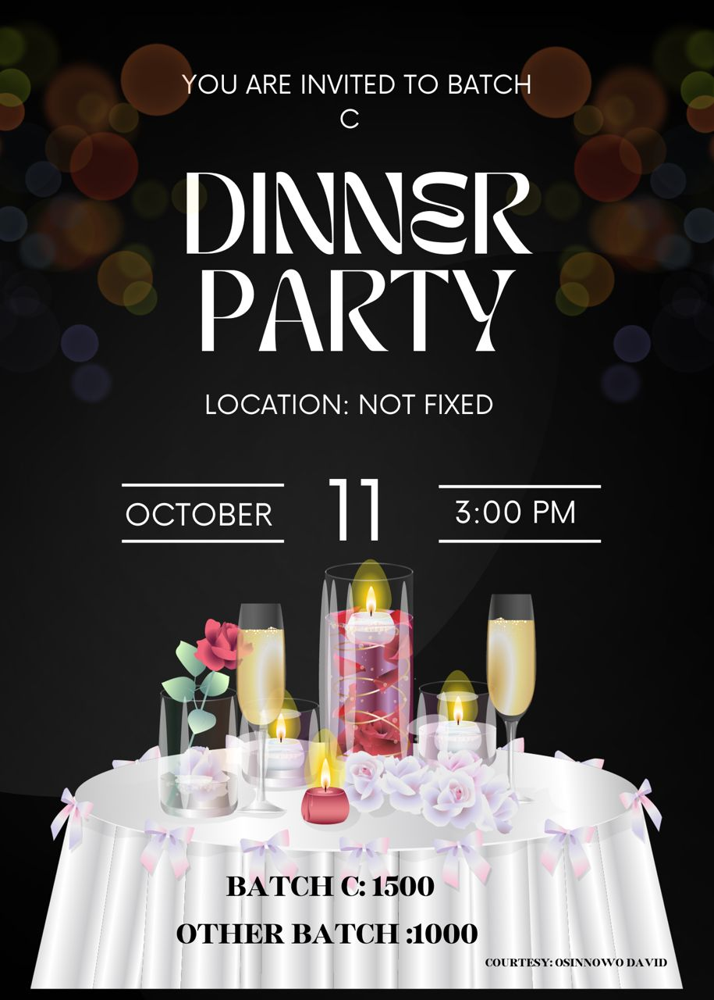

Back to home page
Graphic
Graphic design
Art is part of life for me. I have been designing since I was in collage i.e. 2013 till date. I’ve been able to design for many clients online and also during my youth service year (NYSC). I designed the filler that was used for cropper’s dinner party in Benue state Makurdi. I work with both adobe Photoshop , Corel draw and Conva.
